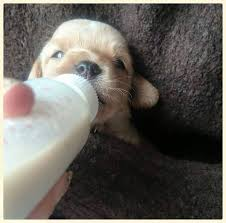
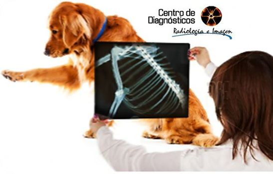
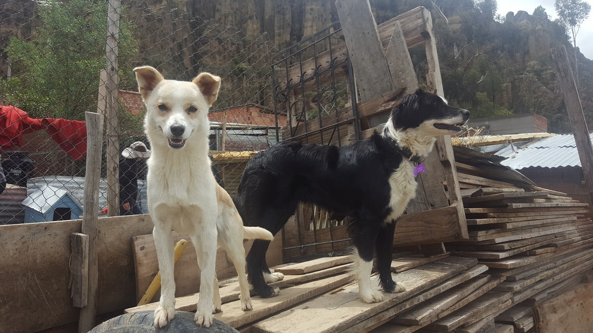
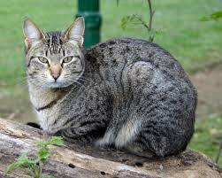

Nuestros servicios para tú mascota peludita!!
Alimentacion y Medicina interna para tu mascota
En la Clínica Veterinaria contamos con los métodos diagnósticos y tratamiento de las enfermedades de los órganos internos de manera no quirúrgica con este fin hemos incorporado equipos de laboratorio, imegenología, electrocardiografía, entre otros.
Radiografia
La Clínica Veterinaria del Mascotas PELUDAS cuenta con métodos diagnósticos de alta calidad como son radiología de alta frecuencia que es un equipo de rayos X gentil con el medio ambiente y con mucho menor riesgo para el personal que labora en el área, cumpliendo con las normas oficiales mexicanas al respecto..
Enseñanza de conducta para tu mascota
La medicina de la conducta es la disciplina de la medicina veterinaria encargada de prevenir y corregir enfermedades conductuales como la depresión, síndromes como: auto mutilación, persecución de cola y otras que son degradantes para nuestras mascotas y deterioran la relación humano-animal..
Peluqueria(Estética)
La Clínica Veterinaria MASCOTAS PELUDAS cuenta con expertos estilistas en el arreglo de todas las razas de perros y gatos, las mascotas son bañadas con agua caliente y los shampoo y jabones de la más alta calidad. .